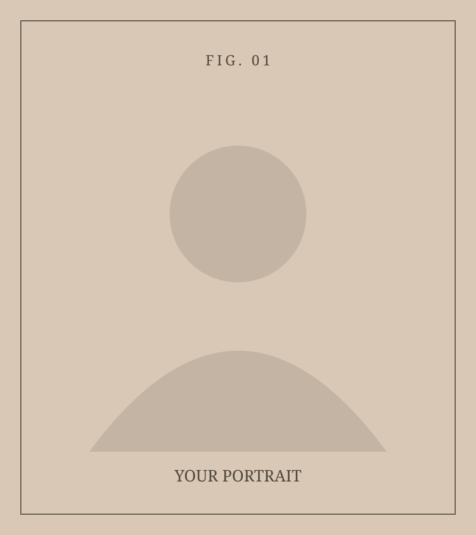

MAR 2026 — PRESENT
Administrative Assistant
OCDetailing Inc. · Fremont, CA
Coordinate vendors, track work and sales, support customers, process payments, and balance competing operational priorities.
THE PERSONAL & PROFESSIONAL PORTFOLIO OF
VOL. 01 / A PERSONAL INTRODUCTION
I'm Angela Qi — an Informatics graduate drawn to the intersection of people, technology, and thoughtful business operations.
From coordinating day-to-day operations to building supportive communities, I believe the best systems are designed with people in mind.

01 / ABOUT THE EDITOR
I graduated from the University of Washington with a Bachelor of Science in Informatics and a minor in Data Science. My studies explored how technology, information, and human values can work together to make organizations more effective and equitable.
My experience spans administrative operations, property management, residential leadership, and student engagement. Across these roles, I've learned to balance detail-oriented processes with the human relationships behind them.
Today, I'm especially interested in human resources, recruiting coordination, and the systems that help people do their best work.
02 / THE PROFESSIONAL RECORD
OCDetailing Inc. · Fremont, CA
Coordinate vendors, track work and sales, support customers, process payments, and balance competing operational priorities.
Redwood Business Services LLC · Fremont, CA
Supported accounts receivable/payable, tenant and vendor communication, service records, and administrative HR tasks including application review, onboarding paperwork, and employee records.
University of Washington · Seattle, WA
Supported residential communities, resolved interpersonal concerns, maintained confidential incident documentation, and mentored student leaders while coordinating community events.
University of Washington · INFO 352
Supported instruction and student learning in a course examining race, gender, and information.
03 / FIELD NOTES & FEATURES
A collection of experiences that shaped how I work, lead, and learn. Swap these sample illustrations for your own photographs and expand the stories as you go.

FEATURE 001 · EDUCATION
My Informatics journey at the University of Washington, and how it inspired my interest in people-centered organizations.

FEATURE 002 · LEADERSHIP
Reflections on residential leadership, trust, and the value of showing up for others.

FEATURE 003 · OPERATIONS
What vendor coordination, customer service, and the small details of operations have taught me.
04 / WORK IN PROGRESS
University coursework · React, Bootstrap, Firebase
A planner application built for INFO 340. Add your project screenshots, contribution, design process, and outcomes here.
[ ADD SCREENSHOTS + PROJECT LINK ]University coursework · Data Science
Placeholder for an R, data visualization, or analytics project. Add the problem, methodology, and findings.
[ ADD PROJECT DETAILS ]Professional portfolio · Case study placeholder
Document a workflow you improved, the tools you used, and measurable results once verified.
[ ADD PROJECT DETAILS ]05 / LETTERS TO THE EDITOR
I'm always interested in conversations about people, systems, and opportunities to contribute.